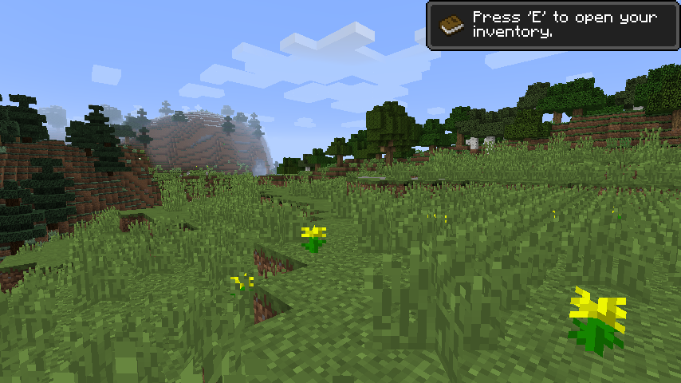
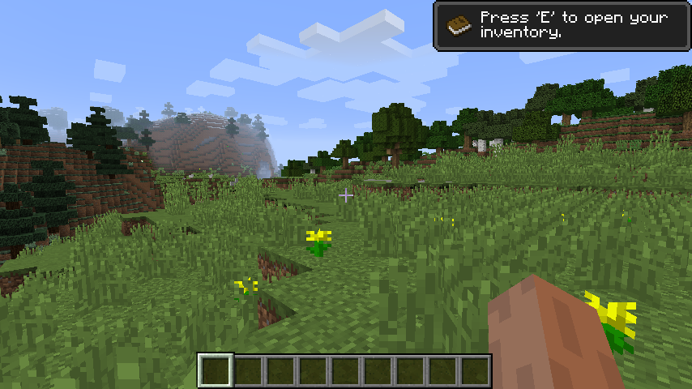

Follow your curiosity.
Head into forests, cross rolling hills, and find out what lies beneath. World generation brings the landscape to life, one chunk at a time.

The open horizon. The first block. The next big idea.
Rediscover the spirit of the 1.8.9 era, rebuilt from the ground up.
01 / Back to the blocks
A quiet place to explore. A blank canvas to build on. LegacyCraft is an independent Java sandbox working toward the feel and behaviour of Minecraft 1.8.9.
Head into forests, cross rolling hills, and find out what lies beneath. World generation brings the landscape to life, one chunk at a time.
Place your first block, plan something bigger, and make a corner of the world your own. Local worlds and saves let you pick up where you left off.
From the title screen to the options menu, the details matter. Familiar menus and resource pack support are already part of the client.
02 / Inside the game
Real captures from the development build. A little of what’s waiting on the other side of the menu.

03 / A work in progress
The client is playable, with world generation, menus, local saves and resource pack support. We’re still building and checking the details against the 1.8.9 behaviour we’re aiming for.
Follow the project on GitHubA playable client and local worlds, available to run from source.
Some mechanics and compatibility features are incomplete. Read the known differences
Browse the source, report a bug, or contribute to the next piece of the game.
Your next idea needs a world.
Take a look at the current build and how to run it.
Get started with LegacyCraft